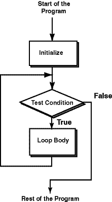

The Gatekeeper

The loop control variable (count)
does not need to exactly hit the limit
that is tested for in the condition part of the while:
while ( count <= 6 )
In the question, the value 5 passed the test.
Then count was incremented to 7.
Then 7 failed the test.
The condition part of a while is like a gatekeeper.
It carefully checks if execution is to be admitted into the loop body.
It doesn't care how things came to be; if the test yields false,
the loop body is skipped.
This is shown in the flowchart.
Execution flows along the lines in the direction of the arrows.
The diamond marked "Test Condition" represents the gatekeeper.
If the condition tests true, execution enters
the loop body.
If the condition tests false, execution is not allowed into
the loop body.
After execution enters the loop body,
the entire loop body is executed.
Then execution
returns to the top of the loop, where the gatekeeper again decides
whether to let it enter the loop body.
QUESTION 3:
Say that the condition is count <= 6 and that there
are many statements in the loop body.
If one of the statements in the middle of the loop body changes count to
12, does the loop body immediately stop execution?
(Hint: look at the flow chart.)